How test selection works
SmartTest answers one question per change: which tests could detect a regression caused by this change, and how sure are we?

1. Changes #
A provider (Git, native snapshots, or both) produces a normalized ChangeSet: added, modified, deleted and renamed files, plus changed line ranges and a completeness flag. → Change tracking
2. Semantic diff #
Changed ranges are mapped to symbols and classified as comment-only, formatting, implementation, signature, exported API, interface, inheritance, decorator, import, configuration, potential-behavioral or unclassifiable. Every classification carries a confidence. If SmartTest can't tell, the change is unclassifiable. It is never treated as a no-op.
3. Dependency graph #
The graph holds files, symbols, tests and configuration. Its edges are IMPORTS, CALLS, EXTENDS, INSTANTIATES, TESTS and others, each with provenance (static, rule, …) and confidence. Starting from the changed symbols, SmartTest walks reverse edges to find every test that can reach them, and keeps the path as evidence.

What counts as a dependency #
- Files: in a Git repository, the project is what
git ls-filessees. Everything.gitignoreexcludes (build output such as.wasp/,.next/,dist/) and submodules are skipped. - Tests: each runner (Jest, Vitest,
node --test) is asked which files it collects, with its own config. A file named*.test.tsthat no runner collects never runs, anddoctorreports it. - Computed imports:
import(`${SCRIPTS}x.mjs`),new URL("../tpl/", import.meta.url)andresolve(__dirname, "fixtures")are evaluated statically. A partially known path becomes a bounded glob (templates/*.ts). Only truly unknowable imports (import(file)) remain uncertainty.
Member-level precision #
Methods and accessors are units of their own. this.tokens.verify() is linked to TokenManager.verify when the class of this.tokens is known locally (new X(), x: X, constructor parameter properties). A change to verify then reaches only callers of verify, not every user of TokenManager. Values that leave a function (returned, passed, stored) or whose class cannot be inferred are linked to the whole class. Constructor, field and heritage changes affect the whole class. Inherited members resolve to the base class; super.m() to the base member.
Resources and conventions #
Some changes are not code. SmartTest links them to the code that reads them:
| Change | Selected |
|---|---|
A key in .env* | Code reading process.env.KEY or import.meta.env.KEY (or the whole environment). A key no code reads keeps the mandatory trigger |
A model or enum in *.prisma | Code using prisma.model, db.model, context.entities.Model or the model type. Datasource/generator changes widen to the schema's directory |
| A key in a translation catalog | Code calling t("key") in that namespace. Parent objects, plural variants and template keys such as t(`menu.${id}`) match; t(variable) reads any key of its namespace. Tests importing the catalog |
A file read through fs with a path built from __dirname / import.meta | The function that reads it |
__snapshots__/x.test.ts.snap | x.test.ts |
__mocks__/m.ts | Users of m |
A generator input listed in generated[].from | Tests of the generated outputs, with a regenerate warning |
Translation keys are qualified by the namespace bound with useTranslation("ns") (per binding, so const { t: tl } = useTranslation("landing") reads landing keys). A translation function received as a parameter, as in getNav(t), reads in its callers' namespaces: the caller records that it passes t on.
End-to-end specs #
Playwright and Cypress specs rarely import application code; they visit URLs. SmartTest reads the visits (page.goto("/users"), request.get(`/users/${id}`), cy.visit("/about")) and links each URL to the files that serve it. Next.js conventions are understood: app/**/page.* and route.* (route groups, [param], [...slug]), pages/**, and layouts, _app, _document and middleware for every route below them. A change to a page, or to anything it imports, selects the specs that visit it. A spec whose visits cannot all be matched (a URL built at run time, a route SmartTest does not know) is uncertain, so it is never ruled out in BALANCED or SAFE mode.
A test that replaces module M with a factory mock (vi.mock("./m", () => …), jest.mock with a factory that does not load the original) never runs M. Implementation changes in M, or in modules only reached through M, do not select it. A change to what M exports still does.
4. Rules & safety #
Rules add risk levels, always-run tests and mode overrides. Mandatory triggers widen the selection for changes with global impact:
| Trigger | Default effect |
|---|---|
tsconfig*.json, Babel/SWC config | full suite |
| Jest/Vitest config, global setup files | full suite for that runner/project |
package.json dependencies, lockfiles | full suite (affected workspace in monorepos) |
.env, .env.test, .env.local… | full suite, unless every changed key is read by analysed code (then its readers) |
| Unresolved import or dynamic pattern touching the change | widened per mode, see below |
Rules can add triggers but cannot remove the built-in ones.
5. Observed execution #
When smarttest trace has recorded which functions each test ran, a fresh trace can rule out a test that static analysis reaches but that never ran the changed code, and can add a test static analysis missed. SAFE mode only adds. → Runtime evidence
6. Modes #
| FAST | BALANCED (default) | SAFE | |
|---|---|---|---|
| Intended for | local loop | pull requests | releases, critical code |
| Traversal | full transitive | full transitive | full transitive |
| Comment/format-only changes | skipped (with a warning) | treated as changes | treated as changes |
| Tests that depend on unresolved/dynamic imports | warning only | selected ("cannot be ruled out") | selected |
| Incomplete change set (e.g. hash-only snapshot) | whole-file seeds | whole-file seeds, status partial | full suite |
| Critical-risk rules | upgrade to SAFE | upgrade to SAFE | SAFE |
| Fresh runtime traces | rule out and add | rule out and add | add only |
Rules can only make the effective mode stricter. The decision always records the requested and the effective mode.
7. Decision & fallback #
The result is an ImpactDecision containing selected tests with reasons, skipped tests with reasons, analysisStatus (complete | partial | fallback), fallbackApplied and any warnings. Its details also list the dependencies the change adds or removes, tests ruled out by traces, and changed units no test reaches ("unprotected"). When a project's whole suite ran faster last time than an analysis usually takes, run skips the graph and runs everything ("Adaptive" in the reasons; adaptive: false turns this off). When the analysis is incomplete in a way that matters, SmartTest widens the selection or runs everything, and tells you why.
8. Run & report #
Selected tests run through the project's runner (Jest, Vitest or node --test). Results are normalized, and skipped tests are reported as not run, never as passed. → Safety model
Asking "why?" #
Output from the nest-auth-vitest fixture after a change to TokenManager.verify:
$ smarttest impact
◇ git · HEAD…working tree · 1 changed file(s) · mode balanced · analysis complete
modified src/modules/auth/TokenManager.ts implementation
[SELECTED] 3
■ test/routes/ProtectedRoutes.test.ts Transitively depends on src/modules/auth/TokenManager.ts#TokenManager.verify (4 hops)
■ tests/unit/modules/auth/AuthService.test.ts Transitively depends on src/modules/auth/TokenManager.ts#TokenManager.verify (2 hops)
■ tests/unit/modules/auth/TokenManager.test.ts Directly depends on src/modules/auth/TokenManager.ts#TokenManager.verify
[SKIPPED] 4 · not run$ smarttest explain test/routes/ProtectedRoutes.test.ts
[SELECTED] test/routes/ProtectedRoutes.test.ts
Reasons
• Transitively depends on src/modules/auth/TokenManager.ts#TokenManager.verify (4 hops)
src/modules/auth/TokenManager.ts#TokenManager.verify → src/modules/auth/AuthService.ts#AuthService.validateToken → src/modules/auth/AuthenticationMiddleware.ts#authenticate → src/routes/protected.ts#protectedRoute → test/routes/ProtectedRoutes.test.ts
Analysis: complete · mode: balanced · git · HEAD…working tree$ smarttest explain tests/unit/modules/auth/AuthController.test.ts
[SKIPPED (not run)] tests/unit/modules/auth/AuthController.test.ts
Reasons
• No static dependency path from changed code
• No mandatory trigger matched
• No rule requires it
Confidence
Limited to the analysed dependency model (0 file(s) with unresolved imports in its dependencies)AuthController uses TokenManager.issue, not verify, so it is skipped.